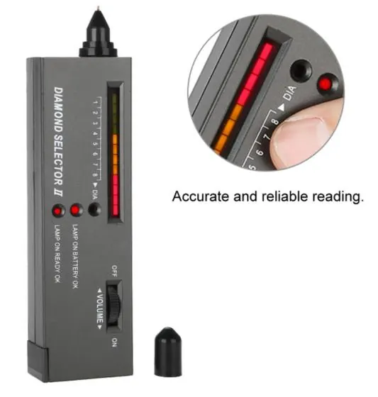

紫外燈：螢光裡的秘密
紫外燈一照，寶石會「發光」——螢光的顏色與強弱，藏著身分與產地的線索。

核心定義
紫外燈（UV lamp）照射寶石，觀察螢光（fluorescence）：紅寶的紅色螢光（鉻）、鑽石的藍色螢光（氮）、合成品的特徵螢光、B 貨翡翠的樹脂螢光——螢光是「身分與處理」的線索。長波（365nm）與短波（254nm）都要測。
螢光的鑑定用途：① 區分天然/合成（合成品螢光常更強/更特定）；② 檢測處理（樹脂、染料的螢光）；③ 產地線索（緬甸紅寶強螢光、泰國弱）；④ 鑽石分級（螢光強弱影響價格）。
特徵與分類
| 寶石 | 螢光 | 意義 |
|---|---|---|
| 紅寶 | 紅色（鉻） | 緬甸強/泰國弱 |
| 鑽石 | 藍色（氮） | 分級參數 |
| 合成紅寶 | 螢光更強 | 合成線索 |
| B貨翡翠 | 藍白（樹脂） | 處理警訊 |
| 無色石英 | 無/弱 | — |
螢光的強弱分級：無、弱、中、強、極強——合成紅寶的螢光常「強到刺眼」；緬甸紅寶的紅色螢光強、泰國紅寶弱——螢光是「天然/合成＋產地」的快速線索（非定論）。
科學原理
螢光的物理：紫外光（高能）激發寶石中的雜質離子（鉻、氮、鐵），離子吸收能量後放出可見光——鉻→紅光、氮→藍光、鐵→淬滅（無螢光）。螢光強度由「雜質種類與含量」決定。
螢光的限制：螢光只是「線索」——部分天然與合成螢光相似、處理品螢光可被調整——螢光要配合其他測試。鑽石分級中，強藍螢光可能讓鑽石「泛藍」（影響價格）——螢光是分級參數。
鑑定與鑑別方法
- 長波＋短波都要測
- 記錄螢光顏色與強弱
- 對比天然/合成螢光特徵
- 查處理：樹脂染料螢光
- 配合其他測試：螢光非定論
市場行情與保養建議
市場價值：紫外燈（約數百人民幣）是「處理檢測」的利器——B 貨翡翠的樹脂螢光、注油祖母綠的油螢光——幾百元的燈，識破幾萬元的處理。但螢光要「會讀」——顏色與強弱都是資訊。
提醒：紫外燈是「警訊器」——發光不代表有問題（天然紅寶也發紅光），不發光也不代表沒處理。螢光是線索，實驗室才是判決。
常見誤區
天然紅寶（鉻螢光）也發紅光、緬甸紅寶螢光強——發光≠假。要讀「什麼顏色、什麼強度」。
部分處理（如注油）螢光弱或可被調整——不發光不代表安全。紫外燈是工具，不是保證。
冷知識
強藍螢光讓鑽石在日光下「泛藍」（牛奶感）——螢光是鑽石分級的參數之一。
鈔票、證件、螢光筆都用螢光防偽——你驗鈔的紫外燈，與寶石鑑定是同一種光。
反直覺觀點
緬甸紅寶的強紅螢光（鉻多）讓它「紅得發光」——螢光強，反而是頂級紅寶的特徵。發光不一定是假。
螢光給線索，但「為什麼發光」（鉻/氮/樹脂）要光譜與顯微鏡——紫外燈是開始，不是結束。